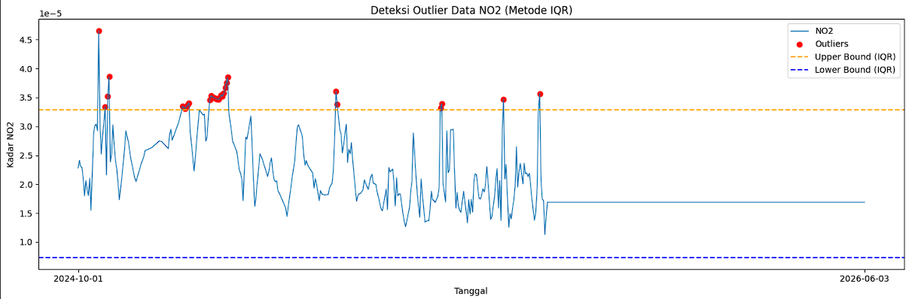
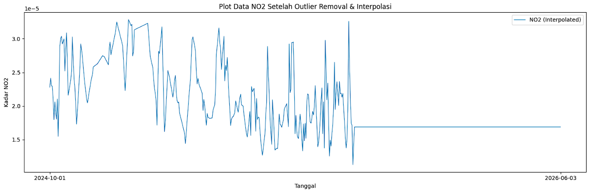

Peramalan kadar \(NO_2\) di daerah Bangkalan Madura (revisi)#
Latar Belakang#
Peningkatan aktivitas industri, transportasi, serta pertumbuhan populasi yang pesat telah menyebabkan peningkatan signifikan terhadap tingkat pencemaran udara di berbagai wilayah. Salah satu polutan udara utama yang menjadi perhatian adalah Nitrogen Dioksida (NO₂), yaitu gas beracun yang dihasilkan terutama dari proses pembakaran bahan bakar fosil seperti kendaraan bermotor, pembangkit listrik, dan kegiatan industri. NO₂ memiliki dampak serius terhadap kesehatan manusia, seperti gangguan pernapasan, iritasi paru-paru, serta memperburuk penyakit asma dan bronkitis. Selain itu, NO₂ juga berkontribusi terhadap pembentukan hujan asam dan penurunan kualitas lingkungan secara keseluruhan.
1. Pengumpulan Data#
Kita install terlebih dahulu openoneo:
pip install openeo
Lalu tuliskan code dibawah:
import openeo
connection = openeo.connect("openeo.dataspace.copernicus.eu").authenticate_oidc()
pada saat menjalankan baris code diatas (connection), nanti akan diminta authentikasi seperti output berikut:
Terminal/Output
Visit [https://identity.dataspace.copernicus.eu/auth/realms/CDSE/device?user_code=TSVQ-EUMA](https://identity.dataspace.copernicus.eu/auth/realms/CDSE/device?user_code=TSVQ-EUMA) to authenticate.
✅ Authorized successfully
Authenticated using device code flow.
Kalian tinggal klik link authentikasi lalu login menggunakan akun “copernicus” kalian.
aoi = {
"type": "Polygon",
"coordinates": [
[
[113.09, -6.89],
[112.68, -6.89],
[112.68, -7.20],
[113.09, -7.20],
[113.09, -6.89],
]
]
}
s5post = connection.load_collection(
"SENTINEL_5P_L2",
temporal_extent=["2024-10-01", "2026-06-03"],
spatial_extent={
"west": 112.68,
"south": -7.20,
"east": 113.09,
"north": -6.89
},
bands=["NO2"],
)
# Now aggregate by day to avoid having multiple data per day
s5p_no2_daily = s5post.aggregate_temporal_period(reducer="mean", period="day")
# Now create a spatial aggregation to generate mean timeseries data
s5p_no2_aoi = s5p_no2_daily.aggregate_spatial(reducer="mean", geometries=aoi)
Code diatas memerlukan titik koordinasi area yang akan diambil data \(NO_2\)-nya, untuk mengambil titik koordinasi kalian kunjungi webiste https://geojson.io/#map=14.8/-7.04732/112.69463 . Didalam website tersebut kalian akan memilih daerah dengan cara memberi shape kotak didaerah yang ingin kalian ambil datanya.
Di panel sebelah kanan terdapat data JSON yang berupa koordinat daerah yang kalian pilih, kalian salin terus sesuaikan dengan code diatas di bagian variabel “aoi” dan spatial_extent.
Lalu kalian tambahkan baris code dibawah untuk memulai pengambilan data:
job = s5post.execute_batch(title="NO2 in Bangkalan terkini", outputfile="NO2Bangkalan Terkini.nc")
Tunggu proses pengambilan data, output proses seperti berikut:
0:00:00 Job 'j-26060301180245c884e46cb43e117ee7': send 'start'
0:00:06 Job 'j-26060301180245c884e46cb43e117ee7': queued (progress 0%)
0:00:11 Job 'j-26060301180245c884e46cb43e117ee7': queued (progress 0%)
0:00:17 Job 'j-26060301180245c884e46cb43e117ee7': queued (progress 0%)
0:00:25 Job 'j-26060301180245c884e46cb43e117ee7': queued (progress 0%)
0:00:35 Job 'j-26060301180245c884e46cb43e117ee7': queued (progress 0%)
0:00:48 Job 'j-26060301180245c884e46cb43e117ee7': queued (progress 0%)
0:01:03 Job 'j-26060301180245c884e46cb43e117ee7': queued (progress 0%)
0:01:22 Job 'j-26060301180245c884e46cb43e117ee7': running (progress N/A)
0:01:46 Job 'j-26060301180245c884e46cb43e117ee7': running (progress N/A)
0:02:16 Job 'j-26060301180245c884e46cb43e117ee7': running (progress N/A)
0:02:53 Job 'j-26060301180245c884e46cb43e117ee7': running (progress N/A)
0:03:40 Job 'j-26060301180245c884e46cb43e117ee7': running (progress N/A)
0:04:39 Job 'j-26060301180245c884e46cb43e117ee7': running (progress N/A)
0:05:39 Job 'j-26060301180245c884e46cb43e117ee7': running (progress N/A)
0:06:39 Job 'j-26060301180245c884e46cb43e117ee7': finished (progress 100%)
Abaikan ketika ada N/A.
Ketika proses pengambilan data, aktivitas kalian akan terekam di halaman https://editor.openeo.org/?server=https%3A%2F%2Fopeneo.dataspace.copernicus.eu%2Fopeneo%2F1.2 . Disitu terdapat nama dataset dan status pengambilan data.
2. Preproccessing Data#
Setelah kita mengambil data, data bisa diunduh di halaman https://editor.openeo.org/?server=https%3A%2F%2Fopeneo.dataspace.copernicus.eu%2Fopeneo%2F1.2 . File akan berbentuk .nc. Kita cuman perlu kolom date dan NO2 menggunakan code dibawah. Pastikan library netCDF4 sudah ter-install.
pip install netCDF4
import netCDF4
file_path = "NO2Bangkalan Terkini.nc"
ds = netCDF4.Dataset(file_path)
# Lihat seluruh variabel yang tersedia
print("📦 Variabel dalam file:")
print(ds.variables.keys())
# dict_keys(['t', 'x', 'y', 'crs', 'NO2'])
# Ambil NO2
no2 = ds.variables["NO2"][:]
# Ambil Time
time = ds.variables["t"][:]
# Konversi waktu ke format tanggal jika punya atribut 'units'
try:
time_units = ds.variables["t"].units
dates = netCDF4.num2date(time, units=time_units)
except Exception:
dates = time # fallback kalau tidak ada units
# Tampilkan struktur data NO2
print(type(no2))
# type <class 'numpy.ma.MaskedArray'>
print(len(no2))
# banyaknya data record NO2: 607
print(len(no2[0]))
# panjang data perbaris: 9
print(len(no2[0][0]))
# panjang perdata: 8
Dari code diatas kita mengetahui bentuk data dari kolom NO2 nya Untuk melihat 10 data pertama adalah:
print("Contoh data pertama:")
for i in range(0, 10):
print(no2[i])
Dalam sehari, terdapat banyak data NO2, jadi kita rata-ratakan agar satu cell data hanya terdapat satu value. Namun terdapat masalah pada data NO2 seperti missing value.
a. Mengatasi Missing Value menggunakan metode Interpolasi Linear#
Sekarang kita akan mengatasi permasalahan missing value pada data NO2.
import numpy as np
import pandas as pd
# Interpolasi Linear
no2_filled = np.zeros_like(no2)
# Untuk jaga-jaga jika terdapat '--' tidak berubah menjadi 0
no2_filled = no2_filled.filled(0)
# loop tiap grid (y,x)
for i in range(no2.shape[1]): # 9 baris
for j in range(no2.shape[2]): # 8 kolom
series = pd.Series(no2[:, i, j])
no2_filled[:, i, j] = series.interpolate(method='linear', limit_direction='both').to_numpy()
Dengan code diatas, missing value yang terdapat pada data NO2 akan diisi secara otomatis menggunakan metode Interpolasi Linear.
b. Rata-rata kan Data dan ubah Datetime#
Setelah mengatasi missing value, kita akan me-rata-rata-kan data NO2 agar satu record hanya berupa single value. Sekalian kita mengambil date nya dan menaruh di array. Kita akan mengubah datetime menjadi format yang sesuai untuk data harian.
new_dates = []
new_no2 = []
for i in range(len(dates)):
# ubah format datetime
new_date = dates[i].strftime('%Y-%m-%d')
new_dates.append(new_date)
new_no2.append(np.mean(no2_filled[i]))
c. Simpan data dalam bentuk CSV#
Setelah itu kita akan membentuk data menjadi DataFrame Pandas untuk disimpan menjadi CSV.
df = pd.DataFrame({
"date": dates,
"NO2": new_no2
})
# Simpan ke CSV
df.to_csv("NO2_Bangkalan_timeseries_terkini.csv", index=False)
Untuk mengatasi missing value awal dan menyimpan data ke CSV sudah berhasil.
d. Pengecekan Missing Value data harian pada CSV#
Sekarang setelah data berbentuk CSV, kita cek apakah data Time Series harian lengkap. Cara men-cek apakah data Time Series Harian lengkap gunakan code dibawah:
import pandas as pd
import numpy as np
df = pd.read_csv("NO2_Bangkalan_timeseries_terkini.csv")
# Pastikan kolom 'date' bertipe datetime
df['date'] = pd.to_datetime(df['date'])
# Buat rentang tanggal lengkap
start_date = "2024-10-01"
end_date = "2026-06-03"
full_range = pd.date_range(start=start_date, end=end_date, freq='D')
# Cek tanggal yang hilang
missing_dates = full_range.difference(df['date'])
print(f"Jumlah hari missing: {len(missing_dates)}")
print("Daftar tanggal missing:")
print(missing_dates)
output/terminal
Jumlah hari missing: 4
Daftar tanggal missing:
DatetimeIndex(['2025-01-30', '2025-01-31', '2026-02-24', '2026-06-03'], dtype='datetime64[ns]', freq=None)
Dalam kasus data terbaru ini, terdapat 4 hari missing value. Kita akan mengatasi lagi missing value menggunakan metode Interpolasi Linear. Cara memperbaikinya gunakan code dibawah:
import pandas as pd
# Pastikan datetime dan sorting
df['date'] = pd.to_datetime(df['date'])
df = df.sort_values('date')
# Buat rentang tanggal lengkap
full_range = pd.date_range(start="2024-10-01", end="2026-06-03", freq='D')
# Reindex agar tanggal yang hilang muncul sebagai NaN
df = df.set_index('date').reindex(full_range)
df.index.name = 'date'
# Interpolasi linear berdasarkan indeks waktu
df['NO2'] = df['NO2'].interpolate(method='time')
# (Opsional) jika masih ada NaN di bagian awal/akhir bisa gunakan forward/backward fill
df['NO2'] = df['NO2'].fillna(method='bfill').fillna(method='ffill')
# Simpan kembali ke CSV
df.to_csv("no2_timeseries_interpolated_terkini.csv")
e. Deteksi Outlier IQR#
Setelah kita mengisi missing value menggunakan metode Interpolasi Linear, selanjutnya kita akan mendeteksi Outlier menggunakan metode IQR pada data hasil penggabungan.
import pandas as pd
import numpy as np
import matplotlib.pyplot as plt
df = pd.read_csv("no2_timeseries_interpolated_terkini.csv")
df['date'] = pd.to_datetime(df['date'])
# Hitung IQR
Q1 = df['NO2'].quantile(0.25)
Q3 = df['NO2'].quantile(0.75)
IQR = Q3 - Q1
lower_bound = Q1 - 1.5 * IQR
upper_bound = Q3 + 1.5 * IQR
# Filter outlier
outliers_iqr = df[(df['NO2'] < lower_bound) | (df['NO2'] > upper_bound)]
print("Jumlah Outlier (IQR):", len(outliers_iqr))
print(outliers_iqr[['date', 'NO2']].head())
output/terminal
Jumlah Outlier (IQR): 31
date NO2
16 2024-10-17 0.000047
21 2024-10-22 0.000033
23 2024-10-24 0.000035
24 2024-10-25 0.000039
81 2024-12-21 0.000033
Untuk men-visualisasi outlier:
# === Visualisasi ===
plt.figure(figsize=(15,5))
plt.plot(df['date'], df['NO2'], label="NO2", linewidth=1)
# Titik Outlier
plt.scatter(outliers_iqr['date'], outliers_iqr['NO2'],
color='red', marker='o', label="Outliers")
# Garis batas atas & bawah
plt.axhline(upper_bound, color='orange', linestyle='dashed', label="Upper Bound (IQR)")
plt.axhline(lower_bound, color='blue', linestyle='dashed', label="Lower Bound (IQR)")
plt.title("Deteksi Outlier Data NO2 (Metode IQR)")
plt.xlabel("Tanggal")
plt.ylabel("Kadar NO2")
plt.legend()
plt.tight_layout()
plt.xticks(
ticks=[df['date'].iloc[0], df['date'].iloc[-1]],
labels=[df['date'].iloc[0].strftime('%Y-%m-%d'),
df['date'].iloc[-1].strftime('%Y-%m-%d')]
)
plt.show()

Setelah itu, kita akan menghapus data outlier. Karena data ini merupakan data Time Series, maka data outlier yang dihapus akan diisi kembali menggunakan Interpolasi Linear.
# Tandai outlier menjadi NaN
df['NO2_cleaned'] = df['NO2'].mask((df['NO2'] < lower_bound) | (df['NO2'] > upper_bound))
print("Jumlah nilai yang dinyatakan sebagai outlier:", df['NO2_cleaned'].isna().sum())
# Interpolasi linear untuk mengisi kembali nilai outlier
df['NO2_filled'] = df['NO2_cleaned'].interpolate(method='linear')
# Jika masih tersisa NaN di ujung data, isi dengan forward/backward fill
df['NO2_filled'] = df['NO2_filled'].bfill()
# df['NO2_filled'] = df['NO2_filled'].fillna(method='bfill').fillna(method='ffill')
print("Jumlah missing setelah interpolasi:", df['NO2_filled'].isna().sum())
output/terminal
Jumlah nilai yang dinyatakan sebagai outlier: 31
Jumlah missing setelah interpolasi: 0
Visualisasi data setelah menghapus Outlier dan mengisi kembali menggunakan Interpolasi Linear:
plt.figure(figsize=(15,5))
# Plot data hasil interpolasi
plt.plot(df['date'], df['NO2_filled'], label="NO2 (Interpolated)", linewidth=1)
# Tampilkan hanya tanggal awal dan akhir di sumbu X
plt.xticks(
ticks=[df['date'].iloc[0], df['date'].iloc[-1]],
labels=[df['date'].iloc[0].strftime('%Y-%m-%d'),
df['date'].iloc[-1].strftime('%Y-%m-%d')]
)
plt.title("Plot Data NO2 Setelah Outlier Removal & Interpolasi")
plt.xlabel("Tanggal")
plt.ylabel("Kadar NO2")
plt.legend()
plt.tight_layout()
plt.show()
